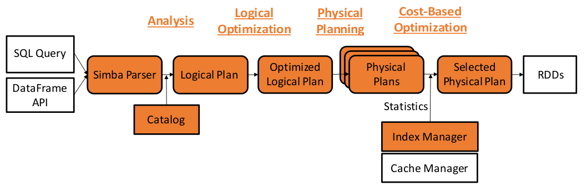

关于Simba的那些事
Simba是个基于Apache Spark的分布式内存空间数据分析引擎，它从系统层面扩展了Spark SQL，使其同时支持使用DataFrame接口和SQL进行丰富的空间数据查询及分析。相关工作已发表在SIGMOD 2016 （Simba: Efficient In-Memory Spatial Analytics）上。
空间数据
随着城市发展，对大规模多源数据实时处理的需求越来越高：
- 基于空间位置的服务，如Google Map等
- 基于文本数据的搜索服务，如Yelp中集成的地理位置服务等
Simba系统框架
Simba基于Apache Spark，自顶向下地实现了SQL解析和扩展的DataFrame API，扩展Spark SQL中对空间操作的查询优化和物理计划，并提供了对空间数据库的索引支持。
- 在上层，Simba提供了用户友好的操作方式，支持交互式Shell和基于Zeeplin的界面操作
- SQL解析器目前已支持range query、KNN等常见空间操作关键字，对时态的操作正在开发中
- 查询优化部分，Simba支持Cost-Based的优化方式，并在物理执行引擎层，实现了RDD分区策略，建立索引加速查询
在Simba中一条查询的过程如下：
这和Spark SQL的过程基于一致，包括分析、逻辑优化、物理计划和基于代价的优化等步骤。Simba在和Spark SQL兼容的前提下，通过相关扩展从底层支持了空间数据的高效操作。
编程接口
Simba提供了编程接口十分友好，同时支持SQL和DataFrame API。
比如说，用户要在数据库中查询距离点(2,3)的最近的5个点，Spark SQL中代码是：
SELECT * FROM points SORT BY (x - 2)*(x - 2) + (y - 3)*(y - 3) LIMIT 5Simba中，
SELECT * FROM points WHERE POINT(x, y) IN KNN(POINT(2, 3), 5)
另外，有的查询是在Spark SQL中无法表达的。比如，用户要在q和p两个空间数据集执行KNN Join (k=3)操作，Simba代码：
SELECT * FROM queries q KNN JOIN pois p ON POINT(p.x, p.y) IN KNN(POINT(q.x, q.y), 3)
用户还可以使用Zepplin进行可视化操作：
索引结构
索引是Simba系统的关键组件。
在RDD分区的基础上，我们在每个node上建立local index，并根据local index建立了global index。
以图中的二维数据为例，Simba使用STRPartition策略进行分区；Local index是将RDD[row]变成RDD[IndexRow]，每个partition组织成为一个Array[Row]+local index的形式，同时把partition的信息发送给master；最后基于局部分区的边界信息创建一个Global indexing。
Simba中对Range query和KNN等操作都是基于上述索引实现的，详细实现算法请参阅项目主页。
总结
Simba同时提供了用户友好的操作，和比Hadoop GIS等系统更卓越的性能，是目前分布式内存空间数据查询的。。。